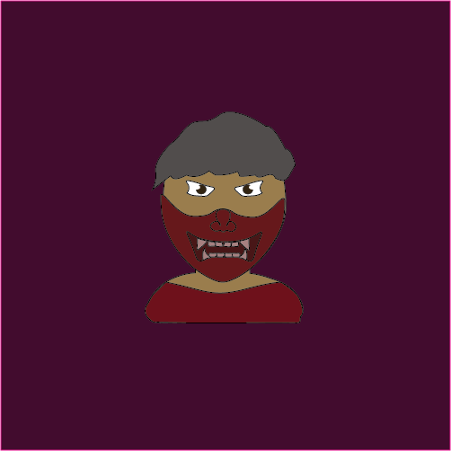

Lone is a charcter who is misunderstood. He has a mask that hides his image at all times. He chooses to do so because all his life he has never really had the friends he would have wannted. Lone is mainly alone alot of the time. He would like to make friends one day but, because of the mask he has on other around him fear him. The character lone has a mask on which is callled an oni mask it's a japanesse mask. Oni mask has onnce been one of the most powerful and feared mask in the world. By wearing this mask Lone is a feared individual.
